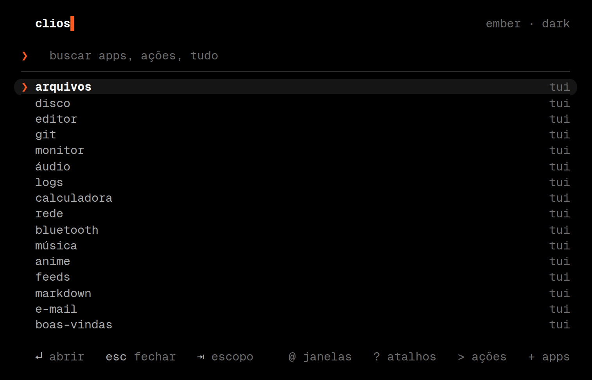
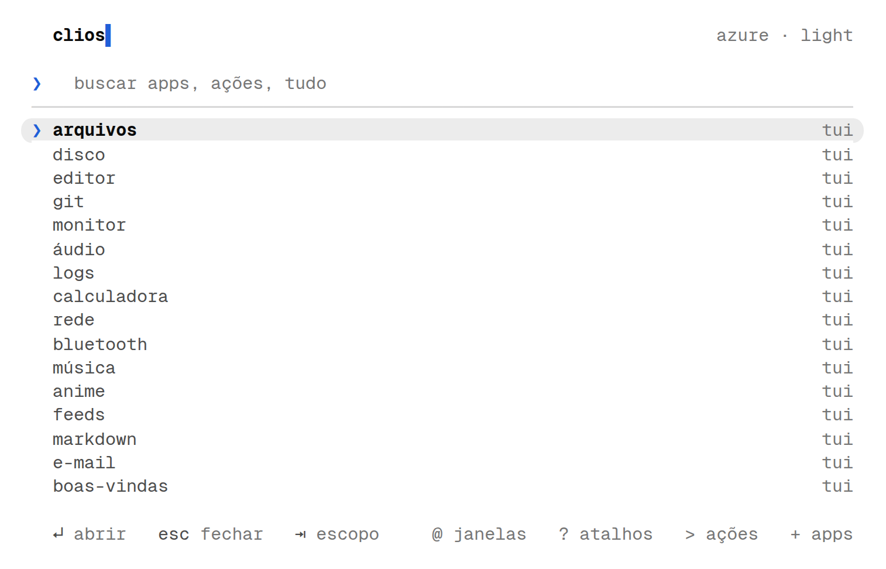
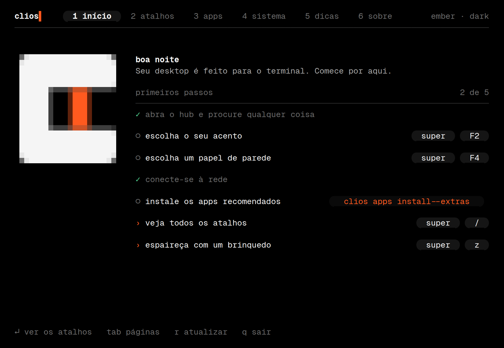
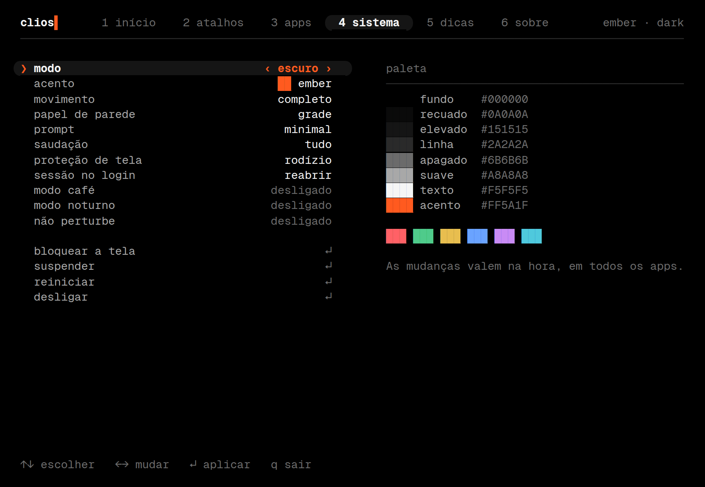
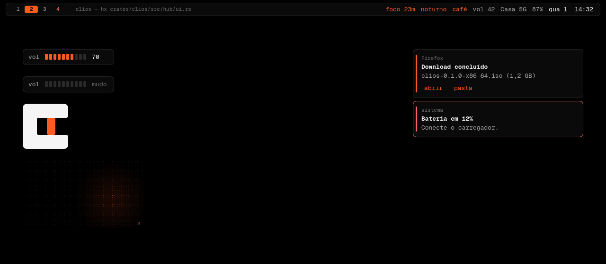
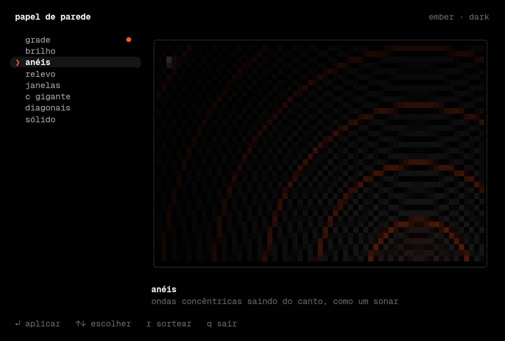
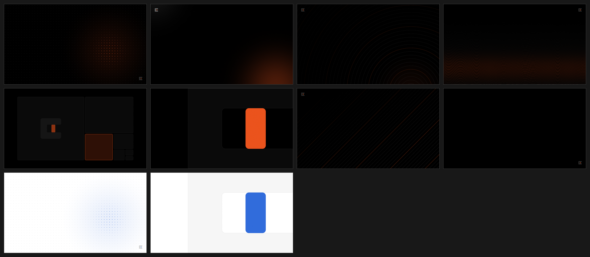
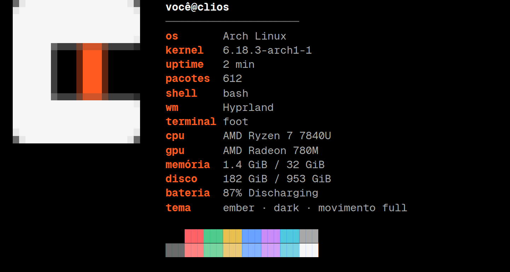

Um desktop Linux feito para o terminal.
Arch, Hyprland e Quickshell, com uma regra: o que dá para fazer num terminal é feito num terminal. O resto do sistema é mínimo o bastante para sumir.
Ilustração montada com HTML, no tema que você escolheu lá em cima. Os textos são os do clios fetch, do hub e do clios play; os valores do resumo são de exemplo.
Tudo é um programa de terminal
Arquivos, git, e-mail, música, rede, bluetooth, o editor: cada um é uma TUI, aberta por um atalho numa janela própria. O único programa gráfico de uso diário é o Firefox, porque alguns sites não funcionam de outro jeito.
O compositor é o Hyprland e a barra é um Quickshell. O resto você já tem: um terminal, um shell e programas que fazem uma coisa bem. O CLIOS só escolhe quais, deixa todos com a mesma cara e os liga por uma configuração só.
Preto e branco
Sete neutros, nos dois modos. A hierarquia vem de linhas de 1 px e de peso de fonte, sem sombra nem gradiente.
Um acento seu
Sete prontos e qualquer hex. Todos passam de 4.5:1 de contraste nos dois modos, então servem como texto.
Uma fonte
Geist Mono em tudo: terminal, barra, notificações, hub, tela de bloqueio. Sem ícones.
Movimento curto
Entrada de 240 ms, saída de 144. Mola só em janelas. Três níveis: completo, reduzido e desligado.
Um trabalho, um app
Quando dois programas fazem a mesma coisa, o CLIOS fica com o melhor e o outro sai. Isso está no catálogo como um campo, job, e um teste reprova o build se dois apps declararem o mesmo. Na V0.3 a regra tirou quatro:
| saiu | ficou | por quê |
|---|---|---|
| fzf | já está ligado ao fish e é dependência de outros apps | |
| impala | o impala já mostra a força do sinal | |
| tldr | os dois respondem “como uso este comando”; o tldr é menor e vem instalado | |
| mpv e Firefox | scraping de filmes quebra toda hora, e o mpv toca o que você tiver |
Uma fonte de verdade
Cor, movimento e tipografia moram num arquivo só. O clios theme apply lê esse arquivo e escreve a configuração de cada programa. Nenhum deles guarda cor própria.
Troque o acento ou o modo na barra do topo: é isso que o comando faz. Os terminais que já estavam abertos mudam na hora, por sequências OSC, sem reiniciar nada.
~/.config/foot/colors.ini
~/.config/starship.toml
~/.config/hypr/theme.lua
~/.config/fastfetch/config.jsonc
Um hex qualquer vira acento: se ele não passa de 4.5:1 no modo atual, o clios o escurece (ou clareia) mantendo o matiz até passar. Os testes de clios-core quebram o build se algum acento ou cor de texto ficar abaixo disso, e os templates de cada programa são renderizados em 48 combinações de modo, acento e movimento.
O que vem no desktop
Um lançador, um guia, um papel de parede que acompanha o tema e uma barra que só mostra o que está ligado.


O hub super + espaço
Um lançador que roda dentro de um terminal. Uma busca só acha apps, janelas abertas, ações, atalhos e o histórico da área de transferência.
Um prefixo restringe: @ janelas, ? atalhos, > ações, " clipboard, + apps que ainda faltam. Com +, o Enter instala.

O guia super + F10
Abre sozinho no primeiro login. Seis páginas: primeiros passos com o estado de cada um ao vivo, os atalhos desenhados como teclas, o catálogo de apps, a central do sistema, dicas e o sobre.
Os atalhos que ele mostra são conferidos contra o config do Hyprland nos testes: citar uma tecla que não existe quebra o build.

A central super + F9
Modo, acento, movimento, papel de parede, prompt, saudação do terminal, proteção de tela, energia, café, noturno e não perturbe. Setas mudam o valor, e a mudança chega a todos os apps na hora.

Barra, OSD e avisos
Uma barra flutuante com as workspaces, o título da janela e só o que está ligado: foco, silêncio, noturno, café, gravação. Clicar num indicador desliga o que ele mostra.
As notificações vão para um histórico (clios notifs), inclusive as que o não perturbe silenciou. A shell avisa quando a bateria chega a 20% e a 10%.

Papel de parede super + F4
Oito estilos gerados em Rust com as cores do acento e do modo, em qualquer resolução. Trocar o acento redesenha o fundo, e o hyprlock usa o mesmo. Suas imagens também entram: clios wallpaper add foto.jpg --set.

Os oito estilos, no acento ember. Todos mudam de cor com o acento.
Um terminal bonito, e quieto
Num sistema que vive no terminal, o terminal é a interface principal. Ele tem prompt em três estilos e um resumo do sistema que aparece só quando faz sentido.
Prompt
Troca na hora, até nos terminais abertos: clios prompt dev.
Resumo do sistema
clios fetch chama o fastfetch com uma config gerada do tema: o acento nos rótulos e a marca do CLIOS como logo, redesenhada a cada troca de acento. Sem o fastfetch instalado, um desenho embutido cobre o essencial. Não existem dois comandos para a mesma coisa.
Captura do fastfetch de verdade, rodando num pty com a paleta do CLIOS. Os valores foram trocados por exemplos.

Quando o terminal se apresenta
O resumo no começo de todo terminal enjoa em uma semana. Por isso o clios greet decide por regras pequenas: o primeiro terminal depois de ligar mostra o resumo; o primeiro terminal de uma workspace vazia mostra duas linhas, a saudação e uma dica; o resto do tempo, nada. Terminais do scratchpad, janelas flutuantes e sessões ssh nunca são apresentados.
Abaixo está a mesma regra, em JavaScript. Mexa nela.
Desligue com tudo aberto
No próximo login, cada terminal volta na pasta e na workspace onde estava, com o editor que estava aberto. Um desktop gráfico reabre o programa; o CLIOS sabe o que havia dentro dele, porque quase tudo aqui é terminal.
Cada terminal nasce com uma ficha, e o fish anota nela a pasta e o comando de agora, sem abrir processo nenhum. A sessão é salva a cada minuto. Na volta, só programas interativos rodam de novo: um cargo build volta como um shell na pasta dele, nunca recomeça sozinho.
Desligue e ligue de novo. É a mesma regra de crates/clios/src/cmd/session.rs.
Atualizar sem medo
Com a raiz em btrfs, cada pacman ganha uma fotografia antes e outra depois. clios snap diff diz quais pacotes mudaram e clios snap undo desfaz a atualização com o sistema rodando, sem pendrive. Uma atualização que trocou o kernel é recusada, com o motivo: o kernel mora no /boot, fora da fotografia, e desfazer só metade deixaria o sistema sem boot. Com o limine, as fotografias também aparecem no menu de boot.
Até o diálogo de arquivo é um terminal
Quando o Firefox pergunta onde salvar, abre uma janela flutuante: a pasta sugerida, um campo de nome com o cursor antes da extensão, e tab para escolher outra pasta no yazi. Para abrir um arquivo, o próprio yazi é o seletor. Experimente o campo ao lado.
O portal é o xdg-desktop-portal-termfilechooser; sem ele, volta o diálogo do GTK.
Contas no hub=
= 18% de 230, = 3 dias em horas. É o fend por trás, com vírgula decimal e um pouco de português. Enter copia.
Na mesma pasta
super + ctrl + enter abre outro terminal já na pasta do que está em foco.
E um comando de mais de 15 segundos avisa quando termina, se você estiver olhando outra janela.
Só a saída
ctrl + shift + y copia a saída do último comando, sem o prompt. O fish marca cada prompt, e o foot sabe onde cada saída começa.
Bateria e noite
clios battery limit 80 para a carga em 80%, também depois de reiniciar. clios night auto 20:30-06:45 esquenta a tela sozinho, todo dia.
Para olhar enquanto o café esfria
Um desktop de terminal tem direito a um aquário. Os brinquedos do catálogo viram parte do sistema: revezam na proteção de tela, aceitam a cor do seu acento e têm um atalho.
Proteção de tela
Depois de 2 minutos parado, a tela mostra a marca deslizando ou um dos brinquedos instalados, em rodízio. O hypridle fecha a janela ao primeiro sinal de vida. clios saver set bonsai fixa um; off desliga.
Um atalhosuper
super + z abre um brinquedo ao acaso numa janela flutuante. No terminal, clios play faz o mesmo, ou clios play lava abre um específico.
Na cor do acento
A maioria dos brinquedos só fala as oito cores ANSI. O CLIOS acha o matiz do seu acento e entrega a cor mais perto. O lavat aceita hex e recebe o acento exato; o csakura tem uma paleta para cada acento.
Na central
A proteção de tela está na central do sistema, ao lado do prompt e da saudação do terminal: rodízio, só a marca, um brinquedo ou desligada.
O que o seu acento vira em cada brinquedo
| brinquedo | comando que o CLIOS monta |
|---|
Atalhos
A tecla super faz o desktop, e as mãos ficam no h j k l. Com shift a ação é mover, com ctrl é variar. Estes são os principais; super + / lista os {{binds}}, e clios keys mostra no terminal.
Nenhum atalho combina. Tente outra palavra.
{{apps}} apps, um para cada trabalho
O catálogo está em config/clios/hub.toml. Os {{core}} essenciais vêm instalados; o resto aparece no hub com + e instala com Enter, ou por clios apps install. Cada entrada tem uma descrição, uma dica de uso e o trabalho que faz.
Nenhum app combina com essa busca.
Instalar
Em cima de um Arch mínimo. O script é idempotente e deixa os seus arquivos de configuração em *.clios-bak antes de trocá-los.
- Instale o Arch
Com o
archinstall, perfil minimal. Escolha btrfs com os subvolumes padrão para ter as fotografias do sistema, e o limine se quiser vê-las no menu de boot. - Baixe o CLIOS
❯git clone https://github.com/kitsuneislife/clios && cd clios - Veja o que vai acontecer
❯./scripts/bootstrap.sh --dry-run - Instale
Pacotes, o binário
clios, os dotfiles, o tema e os serviços.❯./scripts/bootstrap.sh - Reinicie
O greetd abre o login e o Hyprland sobe sozinho. O guia de boas-vindas aparece no primeiro login. Depois,
clios doctordiz o que falta.
Para o console de texto (boot e TTY) usar a paleta do CLIOS, rode com --kernel-cmdline. Para apps extras de uma vez, --extras. Para experimentar numa VM, há um perfil de ISO ao vivo em iso/.
O que está testado
- {{tests}} testes de Rust,
clippysem avisos, e tudo no CI. - O contraste de todo acento e texto, nos dois modos.
- O config Lua do Hyprland, contra o stub oficial da API, com um validador que reprova 18 configs erradas.
- Os componentes da shell, renderizados fora do Quickshell.
- Os configs gerados, contra o starship, o fastfetch e o nft de verdade.
- A sessão, as fotografias e o diálogo de arquivo, em funções puras; a ficha do terminal, no fish de verdade.
- O hub, o guia, o seletor de papel de parede e a proteção de tela, em todos os tamanhos de terminal.
O que nunca rodou
- Nenhuma peça foi executada numa sessão real do Hyprland, nem do Quickshell.
- Os nomes dos pacotes foram conferidos por pesquisa, não por instalação. O bootstrap pula e avisa os que não existirem.
- O snapper e o portal de arquivos não rodaram de verdade: os formatos foram conferidos no código de cada um.
- A ISO nunca foi montada, e nada foi testado em hardware.
Se algo quebrar, clios doctor diz o que falta, e uma issue com a saída dele ajuda muito.